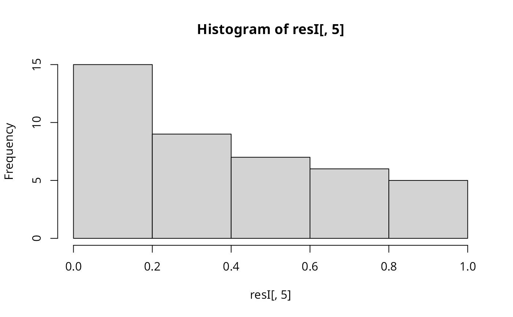

Local Moran's I statistic
localmoran.RdThe local spatial statistic Moran's I is calculated for each zone based on the spatial weights object used. The values returned include a Z-value, and may be used as a diagnostic tool. The statistic is: $$I_i = \frac{(x_i-\bar{x})}{{\sum_{k=1}^{n}(x_k-\bar{x})^2}/(n-1)}{\sum_{j=1}^{n}w_{ij}(x_j-\bar{x})}$$, and its expectation and variance are given in Anselin (1995).
localmoran(x, listw, zero.policy=NULL, na.action=na.fail, alternative = "greater", p.adjust.method="none", mlvar=TRUE, spChk=NULL, adjust.x=FALSE)
Arguments
| x | a numeric vector the same length as the neighbours list in listw |
|---|---|
| listw | a |
| zero.policy | default NULL, use global option value; if TRUE assign zero to the lagged value of zones without neighbours, if FALSE assign NA |
| na.action | a function (default |
| alternative | a character string specifying the alternative hypothesis, must be one of greater (default), less or two.sided. |
| p.adjust.method | a character string specifying the probability value adjustment for multiple tests, default "none"; see |
| mlvar | default TRUE: values of local Moran's I are reported using the variance of the variable of interest (sum of squared deviances over n), but can be reported as the sample variance, dividing by (n-1) instead; both are used in other implementations. |
| spChk | should the data vector names be checked against the spatial objects for identity integrity, TRUE, or FALSE, default NULL to use |
| adjust.x | default FALSE, if TRUE, x values of observations with no neighbours are omitted in the mean of x |
Details
The values of local Moran's I are divided by the variance (or sample variance) of the variable of interest to accord with Table 1, p. 103, and formula (12), p. 99, in Anselin (1995), rathar than his formula (7), p. 98. The variance of the local Moran statistic is taken from Sokal et al. (1998), equation 5 p. 334 and A4*, p. 351. By default, the implementation divides by n, not (n-1) in calculating the variance and higher moments.
Value
local moran statistic
expectation of local moran statistic
variance of local moran statistic
standard deviate of local moran statistic
p-value of local moran statistic
References
Anselin, L. 1995. Local indicators of spatial association, Geographical Analysis, 27, 93--115; Getis, A. and Ord, J. K. 1996 Local spatial statistics: an overview. In P. Longley and M. Batty (eds) Spatial analysis: modelling in a GIS environment (Cambridge: Geoinformation International), 261--277; Sokal, R. R, Oden, N. L. and Thomson, B. A. 1998. Local Spatial Autocorrelation in a Biological Model. Geographical Analysis, 30. 331--354; Bivand RS, Wong DWS 2018 Comparing implementations of global and local indicators of spatial association. TEST, 27(3), 716--748 https://doi.org/10.1007/s11749-018-0599-x
See also
Examples
data(afcon, package="spData") oid <- order(afcon$id) resI <- localmoran(afcon$totcon, nb2listw(paper.nb)) printCoefmat(data.frame(resI[oid,], row.names=afcon$name[oid]), check.names=FALSE)#> Ii E.Ii Var.Ii Z.Ii Pr.z...0. #> THE GAMBIA 0.3752254 -0.0243902 0.8707799 0.4282410 0.3342 #> MALI 0.4636340 -0.0243902 0.1084938 1.4816272 0.0692 #> SENEGAL 0.2567014 -0.0243902 0.2037796 0.6226838 0.2667 #> BENIN 0.1941194 -0.0243902 0.2037796 0.4840501 0.3142 #> MAURITANIA 0.0970535 -0.0243902 0.2037796 0.2690263 0.3940 #> NIGER 0.2307143 -0.0243902 0.1084938 0.7744898 0.2193 #> IVORY COAST 0.2900359 -0.0243902 0.1593129 0.7877586 0.2154 #> GUINEA 0.1826275 -0.0243902 0.1593129 0.5186592 0.3020 #> BURKINA FASO 0.5082778 -0.0243902 0.1296684 1.4792430 0.0695 #> LIBERIA 0.1856475 -0.0243902 0.2778907 0.3984375 0.3452 #> SIERRA LEONE 0.2652337 -0.0243902 0.4261130 0.4436823 0.3286 #> GHANA 0.1476406 -0.0243902 0.2778907 0.3263392 0.3721 #> TOGO 0.2193448 -0.0243902 0.2778907 0.4623607 0.3219 #> CAMEROON 0.2592454 -0.0243902 0.1593129 0.7106167 0.2387 #> NIGERIA 0.1137709 -0.0243902 0.2037796 0.3060593 0.3798 #> GABON 0.2036649 -0.0243902 0.4261130 0.3493635 0.3634 #> CENTRAL AFRICAN REPUBLIC -0.4420567 -0.0243902 0.1593129 -1.0464153 0.8523 #> CHAD -0.1052846 -0.0243902 0.1296684 -0.2246472 0.5889 #> CONGO 0.0113803 -0.0243902 0.2037796 0.0792401 0.4684 #> ZAIRE 0.7097807 -0.0243902 0.0802610 2.5914625 0.0048 #> ANGOLA 0.1179749 -0.0243902 0.2778907 0.2700640 0.3936 #> UGANDA 1.9425080 -0.0243902 0.1593129 4.9278382 0.0000 #> KENYA 1.1969287 -0.0243902 0.1593129 3.0598747 0.0011 #> TANZANIA 0.2718545 -0.0243902 0.0926129 0.9734529 0.1652 #> BURUNDI -0.4842787 -0.0243902 0.2778907 -0.8723997 0.8085 #> RWANDA -0.7523578 -0.0243902 0.2037796 -1.6126187 0.9466 #> SOMALIA 0.4527658 -0.0243902 0.4261130 0.7309674 0.2324 #> ETHIOPIA 0.7251240 -0.0243902 0.2778907 1.4218143 0.0775 #> ZAMBIA 0.0421598 -0.0243902 0.0926129 0.2186818 0.4134 #> ZIMBABWE -0.0095068 -0.0243902 0.2037796 0.0329703 0.4868 #> MALAWI -0.2288840 -0.0243902 0.2778907 -0.3879207 0.6510 #> MOZAMBIQUE 0.0167900 -0.0243902 0.1296684 0.1143594 0.4545 #> SOUTH AFRICA -0.1825396 -0.0243902 0.1084938 -0.4801368 0.6844 #> LESOTHO -0.4193478 -0.0243902 0.8707799 -0.4232493 0.6639 #> BOTSWANA -0.0039316 -0.0243902 0.2778907 0.0388096 0.4845 #> SWAZILAND 0.0166842 -0.0243902 0.4261130 0.0629231 0.4749 #> MOROCCO -0.0969607 -0.0243902 0.4261130 -0.1111725 0.5443 #> ALGERIA -0.0100369 -0.0243902 0.1296684 0.0398599 0.4841 #> TUNISIA 0.0053873 -0.0243902 0.4261130 0.0456170 0.4818 #> LIBYA 0.8038237 -0.0243902 0.1296684 2.2999872 0.0107 #> SUDAN 2.9877738 -0.0243902 0.0926129 9.8978982 0.0000 #> EGYPT 6.9467291 -0.0243902 0.4261130 10.6792343 0.0000#> [1] 0.4167956#> [1] 0.4167956#> #> Moran I test under randomisation #> #> data: afcon$totcon #> weights: nb2listw(paper.nb) #> #> Moran I statistic standard deviate = 4.3485, p-value = 6.854e-06 #> alternative hypothesis: greater #> sample estimates: #> Moran I statistic Expectation Variance #> 0.41679563 -0.02439024 0.01029358 #># note equality for mean() only when the sum of weights equals # the number of observations (thanks to Juergen Symanzik) resI <- localmoran(afcon$totcon, nb2listw(paper.nb), p.adjust.method="bonferroni") printCoefmat(data.frame(resI[oid,], row.names=afcon$name[oid]), check.names=FALSE)#> Ii E.Ii Var.Ii Z.Ii Pr.z...0. #> THE GAMBIA 0.3752254 -0.0243902 0.8707799 0.4282410 0.6685 #> MALI 0.4636340 -0.0243902 0.1084938 1.4816272 0.5538 #> SENEGAL 0.2567014 -0.0243902 0.2037796 0.6226838 1.0000 #> BENIN 0.1941194 -0.0243902 0.2037796 0.4840501 1.0000 #> MAURITANIA 0.0970535 -0.0243902 0.2037796 0.2690263 1.0000 #> NIGER 0.2307143 -0.0243902 0.1084938 0.7744898 1.0000 #> IVORY COAST 0.2900359 -0.0243902 0.1593129 0.7877586 1.0000 #> GUINEA 0.1826275 -0.0243902 0.1593129 0.5186592 1.0000 #> BURKINA FASO 0.5082778 -0.0243902 0.1296684 1.4792430 0.4868 #> LIBERIA 0.1856475 -0.0243902 0.2778907 0.3984375 1.0000 #> SIERRA LEONE 0.2652337 -0.0243902 0.4261130 0.4436823 0.9859 #> GHANA 0.1476406 -0.0243902 0.2778907 0.3263392 1.0000 #> TOGO 0.2193448 -0.0243902 0.2778907 0.4623607 1.0000 #> CAMEROON 0.2592454 -0.0243902 0.1593129 0.7106167 1.0000 #> NIGERIA 0.1137709 -0.0243902 0.2037796 0.3060593 1.0000 #> GABON 0.2036649 -0.0243902 0.4261130 0.3493635 1.0000 #> CENTRAL AFRICAN REPUBLIC -0.4420567 -0.0243902 0.1593129 -1.0464153 1.0000 #> CHAD -0.1052846 -0.0243902 0.1296684 -0.2246472 1.0000 #> CONGO 0.0113803 -0.0243902 0.2037796 0.0792401 1.0000 #> ZAIRE 0.7097807 -0.0243902 0.0802610 2.5914625 0.0478 #> ANGOLA 0.1179749 -0.0243902 0.2778907 0.2700640 1.0000 #> UGANDA 1.9425080 -0.0243902 0.1593129 4.9278382 0.0000 #> KENYA 1.1969287 -0.0243902 0.1593129 3.0598747 0.0066 #> TANZANIA 0.2718545 -0.0243902 0.0926129 0.9734529 1.0000 #> BURUNDI -0.4842787 -0.0243902 0.2778907 -0.8723997 1.0000 #> RWANDA -0.7523578 -0.0243902 0.2037796 -1.6126187 1.0000 #> SOMALIA 0.4527658 -0.0243902 0.4261130 0.7309674 0.6972 #> ETHIOPIA 0.7251240 -0.0243902 0.2778907 1.4218143 0.3102 #> ZAMBIA 0.0421598 -0.0243902 0.0926129 0.2186818 1.0000 #> ZIMBABWE -0.0095068 -0.0243902 0.2037796 0.0329703 1.0000 #> MALAWI -0.2288840 -0.0243902 0.2778907 -0.3879207 1.0000 #> MOZAMBIQUE 0.0167900 -0.0243902 0.1296684 0.1143594 1.0000 #> SOUTH AFRICA -0.1825396 -0.0243902 0.1084938 -0.4801368 1.0000 #> LESOTHO -0.4193478 -0.0243902 0.8707799 -0.4232493 1.0000 #> BOTSWANA -0.0039316 -0.0243902 0.2778907 0.0388096 1.0000 #> SWAZILAND 0.0166842 -0.0243902 0.4261130 0.0629231 1.0000 #> MOROCCO -0.0969607 -0.0243902 0.4261130 -0.1111725 1.0000 #> ALGERIA -0.0100369 -0.0243902 0.1296684 0.0398599 1.0000 #> TUNISIA 0.0053873 -0.0243902 0.4261130 0.0456170 1.0000 #> LIBYA 0.8038237 -0.0243902 0.1296684 2.2999872 0.0751 #> SUDAN 2.9877738 -0.0243902 0.0926129 9.8978982 0.0000 #> EGYPT 6.9467291 -0.0243902 0.4261130 10.6792343 0.0000#> [1] 1363 1421 1861 NA 5246 811 299 358 NA 4751 1878 933 347 1130 NA #> [16] 604 1015 NA 2122 1090 848 618 758 423 980 3087 2273 3134 1142 824 #> [31] NA 487 604 1528 1554 629 792 795 1266 1875 147 363resI.na <- localmoran(totcon, nb2listw(paper.nb), na.action=na.exclude, zero.policy=TRUE) if (class(attr(resI.na, "na.action")) == "exclude") { print(data.frame(resI.na[oid,], row.names=afcon$name[oid]), digits=2) } else print(resI.na, digits=2)#> Ii E.Ii Var.Ii Z.Ii Pr.z...0. #> THE GAMBIA NA NA NA NA NA #> MALI 0.43053 -0.028 0.103 1.4256 7.7e-02 #> SENEGAL 0.19770 -0.028 0.267 0.4363 3.3e-01 #> BENIN NA NA NA NA NA #> MAURITANIA 0.08468 -0.028 0.195 0.2544 4.0e-01 #> NIGER 0.41129 -0.028 0.195 0.9931 1.6e-01 #> IVORY COAST 0.26680 -0.028 0.152 0.7544 2.3e-01 #> GUINEA 0.16474 -0.028 0.152 0.4930 3.1e-01 #> BURKINA FASO 0.51599 -0.028 0.152 1.3926 8.2e-02 #> LIBERIA 0.16792 -0.028 0.267 0.3787 3.5e-01 #> SIERRA LEONE 0.24156 -0.028 0.410 0.4204 3.4e-01 #> GHANA 0.13131 -0.028 0.267 0.3078 3.8e-01 #> TOGO 0.23572 -0.028 0.410 0.4113 3.4e-01 #> CAMEROON 0.23326 -0.028 0.195 0.5904 2.8e-01 #> NIGERIA 0.13710 -0.028 0.410 0.2574 4.0e-01 #> GABON 0.18526 -0.028 0.410 0.3326 3.7e-01 #> CENTRAL AFRICAN REPUBLIC -0.59929 -0.028 0.195 -1.2927 9.0e-01 #> CHAD NA NA NA NA NA #> CONGO 0.00767 -0.028 0.195 0.0802 4.7e-01 #> ZAIRE 0.54342 -0.028 0.088 1.9256 2.7e-02 #> ANGOLA 0.12818 -0.028 0.267 0.3018 3.8e-01 #> UGANDA 1.86640 -0.028 0.195 4.2845 9.2e-06 #> KENYA 1.21180 -0.028 0.195 2.8039 2.5e-03 #> TANZANIA NA NA NA NA NA #> BURUNDI -0.26065 -0.028 0.410 -0.3635 6.4e-01 #> RWANDA -0.62818 -0.028 0.267 -1.1618 8.8e-01 #> SOMALIA 0.46059 -0.028 0.410 0.7624 2.2e-01 #> ETHIOPIA 0.73527 -0.028 0.267 1.4765 7.0e-02 #> ZAMBIA 0.01572 -0.028 0.103 0.1353 4.5e-01 #> ZIMBABWE -0.01606 -0.028 0.195 0.0265 4.9e-01 #> MALAWI 0.08942 -0.028 0.410 0.1830 4.3e-01 #> MOZAMBIQUE 0.14264 -0.028 0.152 0.4364 3.3e-01 #> SOUTH AFRICA -0.17622 -0.028 0.103 -0.4617 6.8e-01 #> LESOTHO -0.41404 -0.028 0.840 -0.4214 6.6e-01 #> BOTSWANA -0.00397 -0.028 0.267 0.0461 4.8e-01 #> SWAZILAND 0.00042 -0.028 0.410 0.0440 4.8e-01 #> MOROCCO -0.09053 -0.028 0.410 -0.0980 5.4e-01 #> ALGERIA -0.02714 -0.028 0.152 0.0016 5.0e-01 #> TUNISIA 0.00199 -0.028 0.840 0.0325 4.9e-01 #> LIBYA NA NA NA NA NA #> SUDAN 3.69517 -0.028 0.124 10.5805 1.8e-26 #> EGYPT 10.53582 -0.028 0.840 11.5246 5.0e-31resG <- localG(afcon$totcon, nb2listw(include.self(paper.nb))) print(data.frame(resG[oid], row.names=afcon$name[oid]), digits=2)#> resG.oid. #> THE GAMBIA -0.984 #> MALI -1.699 #> SENEGAL -1.463 #> BENIN -1.301 #> MAURITANIA -0.605 #> NIGER -1.049 #> IVORY COAST -1.417 #> GUINEA -1.449 #> BURKINA FASO -1.751 #> LIBERIA -1.041 #> SIERRA LEONE -0.870 #> GHANA -1.103 #> TOGO -0.991 #> CAMEROON -1.133 #> NIGERIA -1.173 #> GABON -0.789 #> CENTRAL AFRICAN REPUBLIC 1.173 #> CHAD 0.463 #> CONGO -0.203 #> ZAIRE 2.023 #> ANGOLA 1.235 #> UGANDA 3.336 #> KENYA 3.503 #> TANZANIA 1.098 #> BURUNDI 0.774 #> RWANDA 1.457 #> SOMALIA 1.183 #> ETHIOPIA 2.627 #> ZAMBIA 0.753 #> ZIMBABWE -0.200 #> MALAWI 0.212 #> MOZAMBIQUE -0.288 #> SOUTH AFRICA -0.868 #> LESOTHO -0.298 #> BOTSWANA 0.041 #> SWAZILAND -0.659 #> MOROCCO 0.022 #> ALGERIA -0.363 #> TUNISIA 0.579 #> LIBYA 2.553 #> SUDAN 4.039 #> EGYPT 4.421